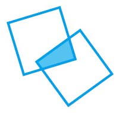
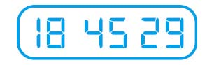
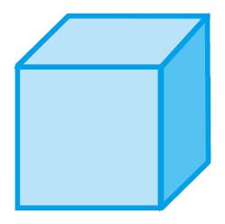

暖身趣味十题
你连13岁的孩子都不如吗？
游戏规则：不得使用计算器！
（1）下面这些语句中有几个是正确的？
所有语句都不对。
这些语句中只有一个是正确的。
这些语句中只有两个是正确的。
所有语句都是正确的。
A. 0 B. 1 C. 2 D. 3 E. 4
（2）下面这些图形中，哪一个图形不可能是由两个相同的正方形重叠后形成的？

A. 等边三角形
B. 正方形
C. 风筝形
D. 七边形
E. 正八边形
（3）下列等式中只有一个是成立的。请问是哪一个？
A. 442 + 772 = 4 477
B. 552 + 662 = 5 566
C. 662 + 552 = 6 655
D. 882 + 332 = 8 833
E. 992 + 222 = 9 922
（4）一排5个“开/关”按钮，任意两个相邻按钮都不同时处于“关”这个状态的组合一共有多少种？
A. 5 B. 10 C. 11 D. 13 E. 15
（5）下面这个加法算式中的每个字母都代表一个不同的数字，其中S代表3。请问Y x O等于多少？
A. 0 B. 2 C. 36 D. 40 E. 42
（6）在24小时内，数字钟面上表示小时、分和秒的6个数字同时改变的次数是多少？

A. 0 B. 1 C. 2 D. 3 E. 24
（7）在下面这些数中，可写成3个正数的立方和的最小数是哪一个？
A. 27 B. 64 C. 125 D. 2 165 E. 512
（8）某个数列从第4项开始的每一项都是前三项的和。已知前三项分别是-3、0、2，第一个大于100的项是第几项？
A. 第11项 B. 第12项 C. 第13项 D. 第14项 E. 第15项
（9）某本书的页码为1、2、3……，已知该书所有页码排列起来是一个852位数，请问最后一页的页码是多少？
A. 215 B. 314 C. 320 D. 329 E. 422
（10）下图所示是一个单位立方体（即长、宽、高均为1的立方体）。假设该立方体被涂成了蓝色。现在，在该立方体的6个面上以面对面的方式分别粘贴一个蓝色单位立方体，构成一个三维“十字架”。如果以面对面的方式，在这个十字架暴露在外的所有面上分别粘贴一个黄色单位立方体，则需要多少个黄色单位立方体？

A. 6 B. 18 C. 24 D. 30 E. 36